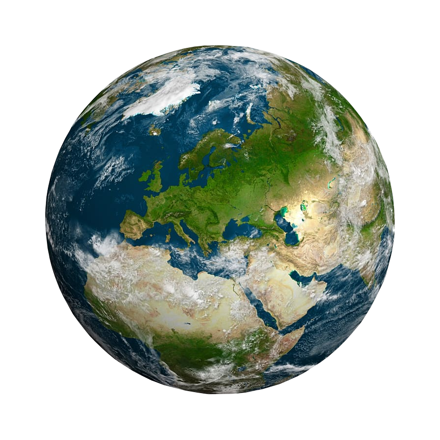

Ziemia

-
Ziemia ma różnorodne klimaty, od zimnych obszarów polarnych po gorące
pustynie, co wynika z kombinacji takich czynników jak odległość od
Słońca, ukształtowanie terenu i ruchy oceaniczne.
-
Ogromne prądy oceaniczne, takie jak Golfsztrom, wpływają na klimat i
dostarczają ciepła do różnych części świata. Zmiany w tych prądach mogą
mieć wpływ na pogodę i życie morskie.
-
Pole magnetyczne Ziemi zmienia się dynamicznie, a niekiedy może nawet
odwrócić swoją polarność. Te zmiany wpływają na nawigację zwierząt i
kompasów.
-
Ziemia jest aktywna sejsmicznie, z obszarami, gdzie występują częste
trzęsienia ziemi i erupcje wulkaniczne. Te zjawiska mogą mieć ogromne
konsekwencje dla życia na Ziemi.
-
Nasza planeta jest jedynym znanym miejscem w kosmosie, gdzie istnieje
życie. Biosfera Ziemi obejmuje ogromną różnorodność organizmów, od
mikroskopijnych bakterii po olbrzymie ssaki.
Powrót na stronę główną